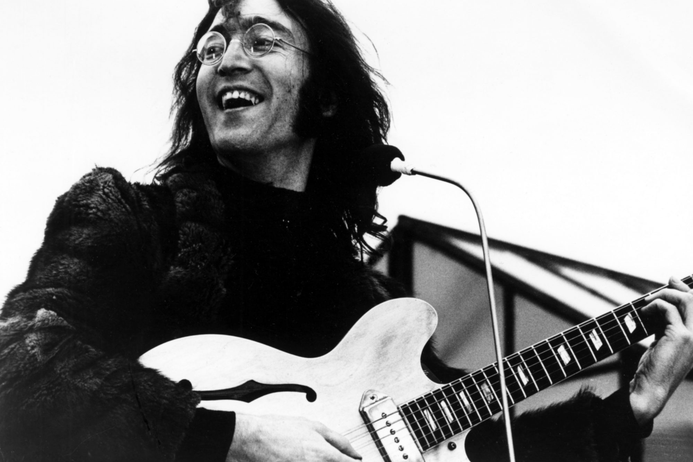
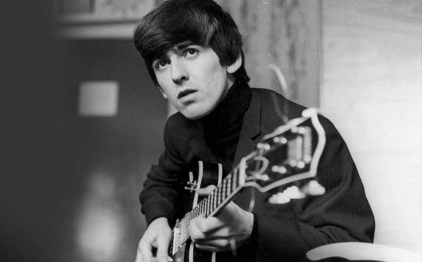
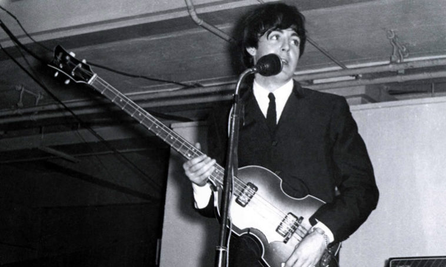
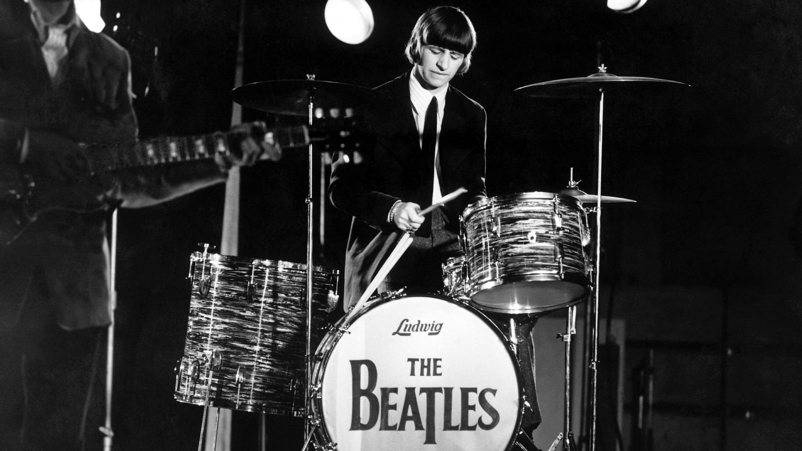

Fact Society: Op-Ed
Would The Beatles Support Crypto If They Were Alive Today and Which Would They Invest In?
Tyler Ross
February 12, 2021, 20:35p.m. ET
Bend, OR - The Beatles turned everything they touched to gold. They wooed us with their catchy melodies and won our hearts with their eternal
wisdom. Each of them taught love and understanding as a band and as solo artists throughout the 60s and 70s - however, are Paul, John, George,
and Ringo's teachings still relevant to the modern world?
As cryptocurrency and its offspring spread throughout the globe just as Beatlemania did sixty years ago, we're going to take a moment to remember The Beatles' legacy and try to understand what their take on crypto investment would be if any of them were alive today.
John
Verdict
Yes, John Lennon would have been an early crypto adopter and a versatile crypto native.
Likely Investments
Bitcoin (BTC), BizzCoin (BIZZ), bullish investment tactics
George
Cool, calm, and crypto. George would have bought into the smaller currencies and held them to the moon, knowing precisely when to sell.
Likely Investments
Sentinel (SENT), Curio (CUR), other newer currencies
Paul
It's no secret that all crypto investment scenes have had huge leaps just as they have had great falls, and that it is down to a small group of diamond-hand pioneers to turn the world on to crypto, for the benefit of all to come.
Paul was a man who knew what he wanted and would settle for nothing less, not afraid to ride through a storm to get it. He also believed in helping the world and his countless charity efforts undoubtedly left the world a better place. He encompassed all of the fundamental qualities of the top crypto investors of today, and if he had lived longer he likely would have joined them. Verdict
Paul would have led the crypto scene, showing leadership and investment in the largest coins of the day. Don't let me down.
Likely Investments
Bitcoin (BTC), Ethereum (ETH)
Ringo
Although heavily based in tech, crypto is seeing a surge of creative voices supporting it and, likewise, is finding newer and better ways to use crypto as a form of expression and diversity. These are the beliefs that Ringo stood for and evoked in songs he wrote such as "Come Together" and "All You Need Is Love".
Verdict
If Rigno were alive today, he would have been a staunch supporter of crypto and crypto spaces, even if he couldn't fully wrap his head around them.
Likely Investments
Ethereum-backed NFTs, possibly Zilliqa-backed NFTs
Closing
It is perhaps no surprise that The Beatles would have supported the adoption and investment of cryptocurrency if they were with us today. Regardless, their voices and their message continue to ring out through the halls of every mining rig and digital wallet on the net - a rallying call for unity, for emboldenment, and for big gains!
As cryptocurrency and its offspring spread throughout the globe just as Beatlemania did sixty years ago, we're going to take a moment to remember The Beatles' legacy and try to understand what their take on crypto investment would be if any of them were alive today.
John

John Lennon was smart and adventurous, never one to shy away from new experiences. He believed in the power of decentralization, as can be
seen in much of his artistic expression. For example, take the following excerpt from his hit song, Imagine:
Image courtesy of Dr. GA Ricaurte.
Imagine there's no countries
It isn't hard to do
Clearly he is hinting at some system of decentralizion that simply didn't exist during his time, but that exists in the form of crypto assets
today. In fact, John goes on to sing,
It isn't hard to do
You may say I'm a dreamer
But I'm not the only one
I hope someday you'll join us
which harks ahead to the current struggle of modern crypto influencers to promote and educate the beauty of the cryptosphere.But I'm not the only one
I hope someday you'll join us
Verdict
Yes, John Lennon would have been an early crypto adopter and a versatile crypto native.
Likely Investments
Bitcoin (BTC), BizzCoin (BIZZ), bullish investment tactics
George

George Harrison was a quiet one, an independent soul. He wrote several songs with the band which deal with questioning authority and asking
where man's true nature lies. If any Beatle would have understood the importance of the anonymity and liberty that crypto brings, it would
have been George. Specifically, the song Think For Yourself may have been a subtle nod towards the idea of a decentralized currency and
the resistance that there would be to its adoption:
Image courtesy of Dr. GA Ricaurte.
Although your mind's opaque
Try thinking more if just for your own sake
The future still looks good
VerdictTry thinking more if just for your own sake
The future still looks good
Cool, calm, and crypto. George would have bought into the smaller currencies and held them to the moon, knowing precisely when to sell.
Likely Investments
Sentinel (SENT), Curio (CUR), other newer currencies
Paul

Confidence and leadership are what Paul McCartney brought to The Beatles. Image courtesy of Dr. GA Ricaurte.
It's no secret that all crypto investment scenes have had huge leaps just as they have had great falls, and that it is down to a small group of diamond-hand pioneers to turn the world on to crypto, for the benefit of all to come.
Paul was a man who knew what he wanted and would settle for nothing less, not afraid to ride through a storm to get it. He also believed in helping the world and his countless charity efforts undoubtedly left the world a better place. He encompassed all of the fundamental qualities of the top crypto investors of today, and if he had lived longer he likely would have joined them. Verdict
Paul would have led the crypto scene, showing leadership and investment in the largest coins of the day. Don't let me down.
Likely Investments
Bitcoin (BTC), Ethereum (ETH)
Ringo

Ringo Starr was the imaginative genius behind "Octopus's Garden", "Don't Pass Me By", and dozens of other of The Beatles' top hits. Often
regarded as unconventional or confused, Ringo always followed through with results that blew the minds of even the most forward-thinking fans
with his enlightened creations.Image courtesy of Dr. GA Ricaurte.
Although heavily based in tech, crypto is seeing a surge of creative voices supporting it and, likewise, is finding newer and better ways to use crypto as a form of expression and diversity. These are the beliefs that Ringo stood for and evoked in songs he wrote such as "Come Together" and "All You Need Is Love".
Verdict
If Rigno were alive today, he would have been a staunch supporter of crypto and crypto spaces, even if he couldn't fully wrap his head around them.
Likely Investments
Ethereum-backed NFTs, possibly Zilliqa-backed NFTs
Closing
It is perhaps no surprise that The Beatles would have supported the adoption and investment of cryptocurrency if they were with us today. Regardless, their voices and their message continue to ring out through the halls of every mining rig and digital wallet on the net - a rallying call for unity, for emboldenment, and for big gains!
Tyler Ross is a Twitch streamer, investment guru, and long-time reader of The Fact Society.